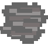

About
Lost in Space is a HTML5 canvas game that makes use of HTML5, CSS and JavaScript.
How to Play
- Point

- Asteroid
You're lost in space, the aim is to collect as many points as you can before your health reaches zero. Your health will go down by 10 each time you colide with an asteroid. Avoid the asteroids, collect points!
Graphics for representation ONLY, not neccesarily game play size.Controls
Keyboard: (Arrows) Up, Down, Left, Right.
Mouse/Trackpad (cursor is top left of spacehip)
'R' 'r' to reload the game
Game Assets
Graphics
- ship.png
- asteroid.png
- point.png
- background.png
All graphics for this game have been created by me (Gavin Reynolds) in 'Adobe Photoshop'. All graphics are in .pmg format (including logo, background of the game and the background of the webpage).
Audio
- track.mp3
- crash.mp3
- points.mp3
- gameover.mp3
All sound effects and tracks have been taken from 'Apple GarageBand' and are in .mp3 format.
Credits
- http://www.aber.ac.uk/~dcswww/Dept/Teaching/CourseNotes/current/CS25210/
- http://users.aber.ac.uk/gar18/ftw/catfight.html
- http://users.aber.ac.uk/gar18/ftw/whack_a_katy.html
- view-source:http://users.aber.ac.uk/gar18/ftw/keypress.html
- http://gamedev.stackexchange.com/questions/18969/how-do-i-play-audio-with-javascript
- http://codetheory.in/moving-scrolling-sliding-background-in-html5-canvas/
- http://www.w3schools.com/tags/av_prop_muted.asp
- Apple GarageBand Loops (Sound Effects)
Disclaimer
The information provided on this and other pages by me, Gavin Reynolds (gar18@aber.ac.uk), is under my own personal responsibility and not that of Aberystwyth University. Similarly, any opinions expressed are my own and are in no way to be taken as those of A.U.